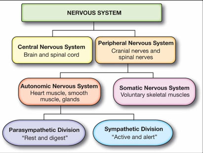

Divisions of the nervous system
| Sympathetic Nervous System | Parasympathetic Nervous System |
|---|---|
| Prepares the body for "fight or flight" responses. | Promotes "rest and digest" responses. |
| It increases breathing rate | It decreases breathing rate |
| Increases heart rate. | Slows down heart rate. |
| Dilates pupils. | Constricts pupils. |
| Inhibits peristalsis. | Promotes peristalsis. |
| Inhibits secretion of saliva and other digestive secretions. | Promotes secretion of saliva and other digestive secretions. |
| Dilates arterioles. | Constricts arterioles. |
| Redirects blood flow to muscles. | Redirects blood flow to digestive organs. |
The nervous system is divided into the central nervous system (CNS) and the peripheral nervous system (PNS). The CNS is further divided into the brain and spinal cord, while the PNS includes all the nerves outside the CNS and is divided into the somatic and autonomic nervous systems.
The autonomic nervous system is further divided into the sympathetic and parasympathetic nervous systems, which have opposite effects on the body.
1. What are the main divisions of the nervous system?
2. What are the components of the central nervous system?
3. What are the components of the peripheral nervous system?
4. What are the functions of the sympathetic and parasympathetic nervous systems?
5. Differentiate between the sympathetic and parasympathetic nervous systems.